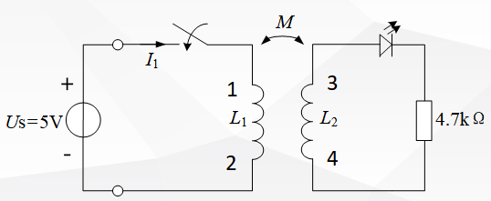
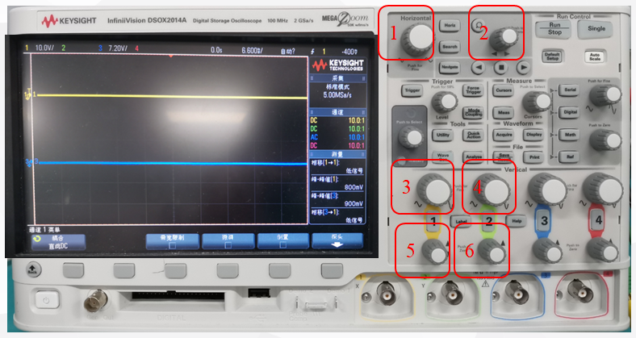
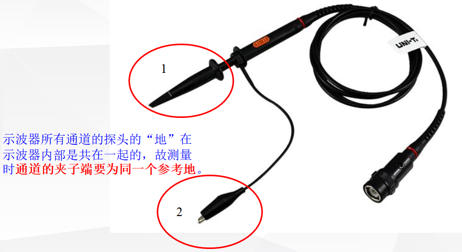
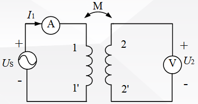
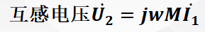
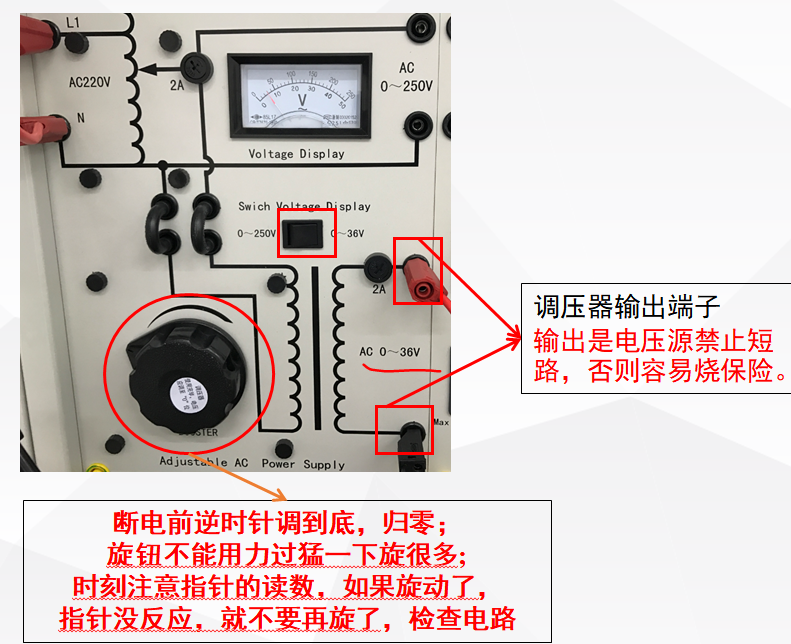
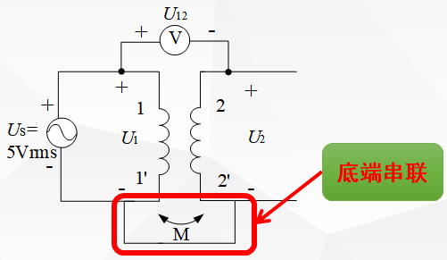
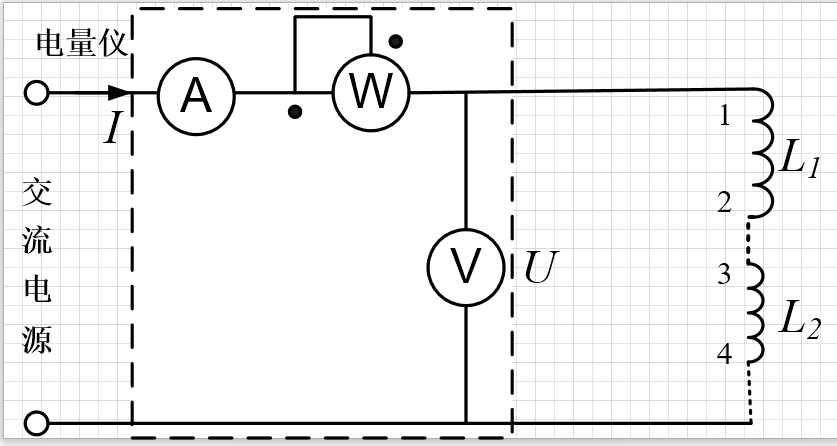

阅读序号1

若调节示波器波形水平精度，选用（）旋钮；若调节示波器所在2通道的波形的垂直精度，应选用（）旋钮。
1，4
1，3
2，4
1，6
若调节示波器波形水平精度，选用（）旋钮；若调节示波器所在2通道的波形的垂直精度，应选用（）旋钮。
1，4
1，3
2，4
1，6
若采用直流法测定两个互感线圈的同名端，若当开关断开时，发光二极管发光，则电感L1的1端子与电感L2的哪个端子互为同名端。

1
2
3
4

若调节示波器波形的水平位置，选用（）旋钮；若调节示波器所在1通道的波形的垂直位置，应选用（）旋钮。
2，6
1，3
2，5
1，5
互感系数是比值定义式，与两线圈的几何形状、大小、相对位置及周围磁介质分布等有关。
通过互感线圈的电流若同时流入同名端，则它们产生的感应电压彼此增强。

示波器的探头，（）端用来测量信号，（）端用来接地。
2，1
1，2
2，2
1，2

互感电动势法测量互感系数，

。
将三相电源中的一相进行调压，使得220V的电压调到0-36V，调压器需要缓慢调节到指定的电压值，测完数据断电前将调压器逆时针调到底归零。

若采用交流法测试两个互感线圈的同名端，根据KVL定理判断，若U12=U1+U2，则1端和2端互为（），若U12=U1-U2，则1端和2端互为（）。
同名端，同名端
异名端，同名端
同名端，异名端
异名端，异名端

采用等效电感法测量互感系数M时，需要将两个电感串联，若电感L1的1端子与L2的4端子互为同名端，那么正串时，L1的2端子应与L2的（）端子串联；反串时，L1的2端子应与L2的（）端子串联。
3，4
4，3
4，4
3，3